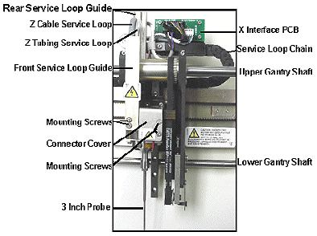
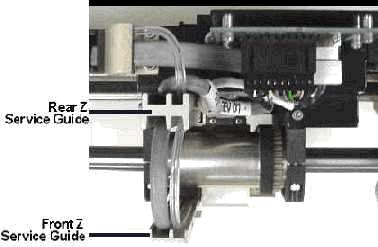
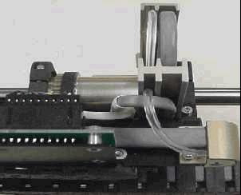
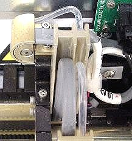

Replacing Service Loop Cables and CnS Tubing on Non-linear Slide Pipettor Gantry
This document provides instructions for removing and installing the X or Z Axis Service Loop cables and click and seal (CnS) tubing into instruments with 3 Inch Pipettor Gantries.
Cautions
The instrument should be powered off when making or breaking electrical connectors to avoid damaging the instrument's electronics.
Procedure overview
- Remove Z Cable
- Install Z Cable
- Remove X Cable
- Install X Cable
- Remove tubing
- Install CnS tubing
- Verification
Reference photos




Remove / Install Procedures
Perform these steps to remove and/or install the service loop cables or the CnS tubing.
Note: Cables and tubing can be replaced separately or all together.